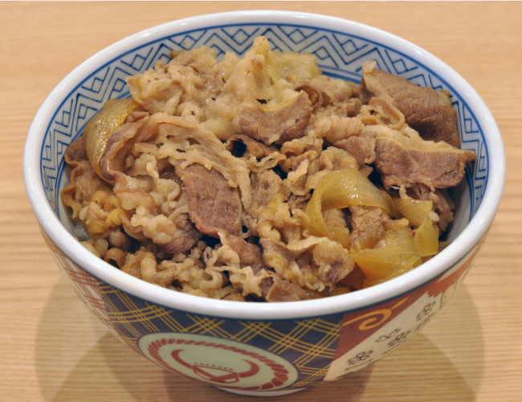

Gyudon
Top Page

Description
Thinly sliced beef and tender onions cooked in savory-sweet sauce, Gyudon, or Japanese Beef Rice Bowl, is synonymous with comfort. It has been a staple in Japanese cuisine for over 150 years! It’s a perfect quick meal for a busy weeknight!
Ingredients
- Thinly sliced beef
- Onion
- Sauce - dashi, sake, mirin, soy sauce, and sugar
- Green onion
- Freshly steamed, Japanese short-grain rice
Steps
- Cut the onion, green onions, and beef.
- Put the sauce ingredients, sliced onions, and beef in a large frying pan and start cooking.
- Serve the simmered beef and onion over steamed rice in large bowls.